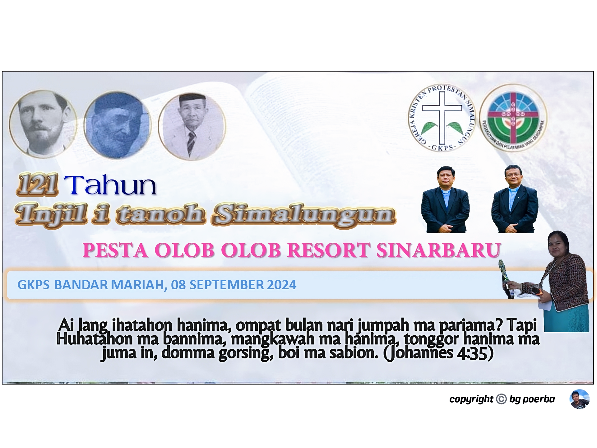
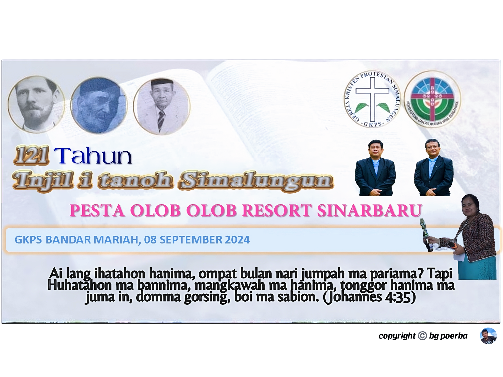

tempat menulis
silahkan tulis sesuatu dibawah ini:


Kami WARGA JEMAAT GKPS SINAR BARU mengundang Anda untuk bergabung dengan kami dalam ibadah dan komunitas yang penuh kasih.
DAMAI KRISTUS YESUS BESERTA KITA SEMUA.
 



Pada mulanya jemaat Sinar Baru mengadakan kebaktian minggu di gereja GKPS desa purba sinombah dengan jarak tempuh lebih kurang 2 km
Karena jauhnya jarak tempuh untuk beribadah ke gereja GKPS yang berada di desa Purba Sinombah maka tumbuhlah suatu keinginan dikemudian hari untuk mendirikan gereja baru.Dahulunya jemaat bertempat tinggal di Desa Bagotlingga yang sekarang dikenang dengan nama Huta Lama,yang hari kemudian masyarakat Bagotlingga berpindah huta ketempat yang baru dan menamakannya Desa Sinar Baru yang berartikan "Kampung yang Baru dan Bersinar" setelah ada musyawarah yang mencapai mufakat bersama dirikanlah sebuah bangunan gereja GKPS Sinar Baru dengan swadaya jemaat itu sendiri di desa Sinar Baru pada tahun tgl 23 maret 1983 dengan resort Saribudolok distrik 3
TEMA sinode GKPS tahun 2024 "Hasadaon pakon pangidangion namarbuah"
"Pataridahkon hita ma hasirsironta pasaudkon hadoharon pakon hadameion i tongah tongahni masyarakat ampa negara maronjolan bani hapintoran ampa hasintongan". Kami percaya bahwa setiap orang berhak merasakan kasih Tuhan
Pukul: 10.00 WIB
Pukul: 08.00 WIB
Pukul: 20.00 WIB
Hari: Kamis
Pukul: 21.00 WIB
Hari: jumat
Pukul: 15.00 WIB
Hari: Minggu
Pukul: 19.00 WIB
Hari: Sabtu